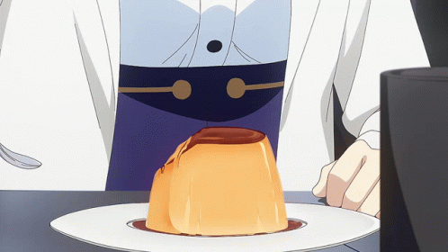

86 Pudding
Description
Creme Caramel from Anime 86: Eighty Six
Ingredients:
Egg Mixture:
- 3 egg
- 300 ml milk / plant milk
- 60 g sugar A
- 10 g sugar B
Caramel:
- 4 tbsp cane sugar
- 2 tbsp water
- 1 tbssp hot water
Instructions:
To make caramel sauce:
- Put a sugar and water in a pan and heat over medium heat. Without stirring, shake the pan to dissolve the sugar and color the entire mixture.
- Turn off the heat when the large bubbles have reduced in size and the color has turned to a dark candy brown.
- Carefully add hot water. Then shake the pan to loosen the caramel. When adding the hot water, be careful not to burn yourself as it will splatter.
- Pour into a pudding mold or heat-resistant cup.
To make egg mixture:
- Place the milk and sugar B in a small saucepan over low heat and warm to the point where small bubbles start to float around the edge of the pan (about 60°C). **The sugar prevents the milk protein from coagulating and prevents a film from forming on the surface when it is heated.
- rack the eggs into a bowl and beat gently. Add the rest of the sugar and mix without whisking.
- Pour in the warmed milk and mix without whisking again.
- Strain the egg mixture through a fine strainer and pour it into a pudding mold or heat-resistant cup.
To steam:
- Add 2 to 3 cm of water to a covered pot or deep frying pan and bring to a boil.
- Wrap the lid with a kitchen cloth.
- After turning off the heat, place a kitchen cloth on the bottom of the pan and place the pudding mold or cup on it. Be careful not to let water get into the egg mixture.
- Put a lid on the pot.
- Wait 15 minutes without turning on the heat. Slowly heating the egg mixture will give it a smooth texture.
- Turn the heat low for 15 minutes and steam. I used a glass cup that is 8cm (3.15inch) in diameter and 6cm(2.36inch) high. If your cup is smaller than that, you will need to shorten the time on the heat.
- Turn off the heat again and wait 30 minutes. Here is also the same. If your cup is smaller than mine, you will need to shorten the time.
- Shake the glass or stick a bamboo skewer in it to see if the egg mixture has hardened. If it hasn't hardened yet, steam again over low heat for 5 minutes, then turn off the heat and wait for 5-10 minutes.
Expected result:
